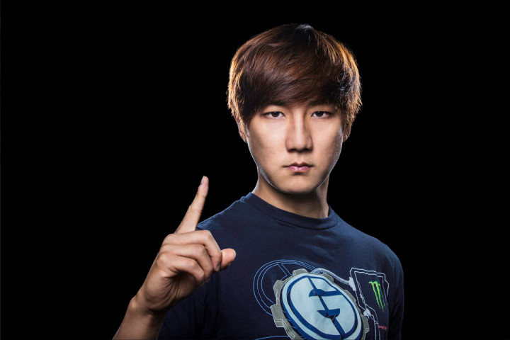

Jaedong is widely revered for his expertise playing Starcraft: Brood War. His creativity on the fly is almost unmatched, and he has the hardware and the prize money to prove it. Between 2007 to 2011, he won three OnGameNet Star leagues and three World Cyber Game titles. His rivalry with Flash is one of the most competitive in all of eSports. They are constantly battling over some of the most sought after titles in all of professional gaming. It's safe to say Jaedong would have easily won more prize money and titles if he didn't have to go head to head with Flash for most of his career.
Jonathan Wendel, who is better known by his gamer tag Fatal1ty, is one of the first true celebrity gamers, and easily one of the most celebrated players in United States history. Wendel has been the king of eSports since the late 90s, taking home titles Quake 3 and Counter-strike. Wendel helped usher in a new type of gamer, one who saw it as a vocation and he practiced accordingly. He took his career very seriously, and he became one of the highest paid professionals in the history of eSports.
If you've ever played Warcraft 3, then you likely know who Moon is, as he is the undisputed king of that title. Moon has won several titles in South Korea, which is generally considered the pinnacle of the professional gaming world. Moon has always displayed the ability to beat anyone put in front of him, no matter the stiffness of the competition, one of the hallmarks of the best gamers in the world. Moon was the highest paid player during his mid to late 00s run, and when all was said and done he left no doubt as to who owns Warcraft.
Patrick Lindberg comes from one of the best gaming nations in the world, Sweden. He is best known
for his domination of the legendary game Counter-Strike, which helped turn him into one of the best
gamers in the world. Counter-Strike was so huge it helped change the face of gaming, and he played
on a gaming team in 2009 that had a huge run and won top prize, and it was largely due to his
flawless play. With over 50 gold medals sitting on his mantel, Lindberg is one of the best gamers in
the world

Hailing from Japan, Daigo is one of the original eSports icons. He made his name and his prize money playing one of the most important fighting games of all time: Street Fighter. His rivalry with professional gamer Alex Valle helped cement his status as one of the best gamers in the world. His world championship back in 1998 helped open up the gaming world, giving it a more global reach where players would regularly compete with the best of the best. His longevity has been incredible and some of his victories have been viewed over 20 million times on Youtube by gamers.
Boxer is right up there with the greatest players in eSports history, and one of the best gamers in the world was absolutely dominant as Starcraft. If you didn't know, Starcraft was probably the most important game in all of eSports—especially in South Korea. Starcraft has always been a major draw, and often these games are played in front of thousands of rabid fans. South Korea turned many top gamers into celebrities, but perhaps none ever reached the heights of Boxer, as he dominated the Star league (the most important gaming league in Korea) and the World Cyber Games for his entire career.
Pioneering gaming maneuvers is something the best gamers in the world do consistently, and Christopher Alesund was always innovating while playing Counter-Strike 1.6. When he was just 19, he was picked up by Fnatic, the best gaming team in Sweden. From then on, despite being surrounded by elite gamers, it was Alesund who made a real name for himself, and his tag GeT_RiGhT is known for dominance. He invented "lurking" which became an unstoppable technique that'd allow him and his team to become legends.
Competing in the most competitive game in the galaxy, Starcraft, Flash was able to rise above and become one of the best gamers in the world. Starcraft was where all the money and celebrity came from, and Flash earned a ton of both. From Starcraft alone, Flash racked up over $400,000 in tournament wins, and hundreds of thousands more in contracts and endorsements. He also reigned the longest as the number one ranked player in the world, a feat that has yet to be matched.
Faker made a name for himself in the League of Legends, the largest and most competitive esport in history—and nobody could hang with him. Among the best of the best, Faker consistently came out on top, undoubtably becoming one of the best gamers in the world. League of Legends is all about teamwork and strategy, so it's truly remarkable that one player could have such a large impact. He came on the scene at 17, and has already won three World titles, the most famous of which came at the Staples Center in Los Angeles.
Last but not least is Dendi, a gamer who took home $200,000 in a single tournament of Dota 2. His skills in Dota 2 are unrivaled, and he became one of the best gamers in the world through his dominance in it alone. His dominant run perhaps wasn't as long as many on this list, but at the height of his powers not many could go where the Ukrainian superstar was capable of going.